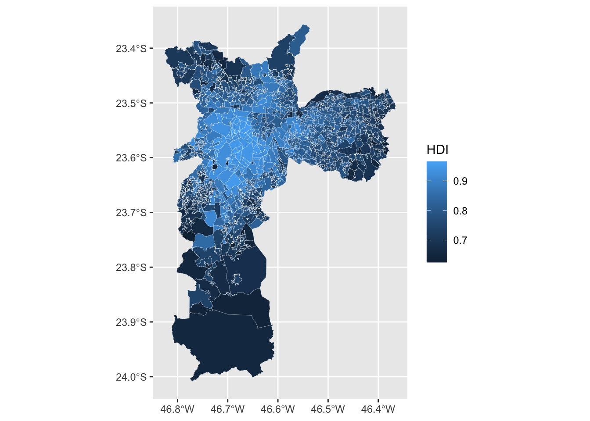
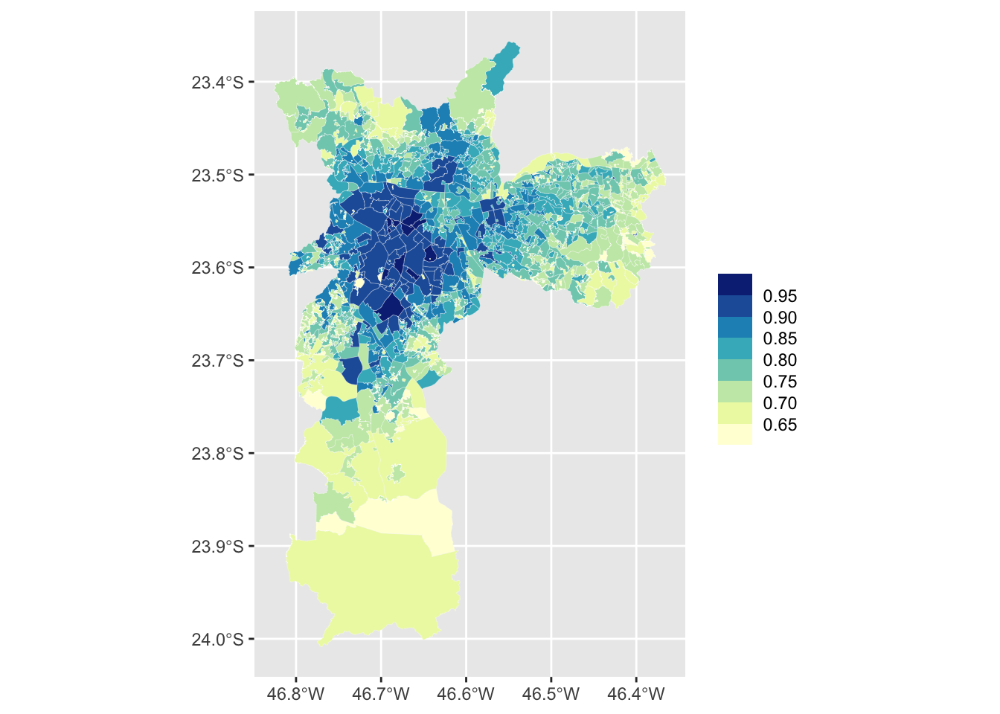
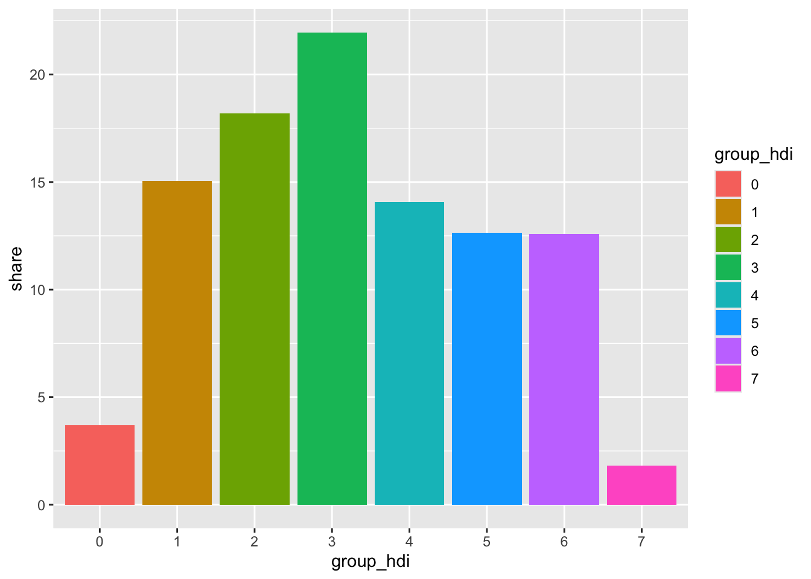
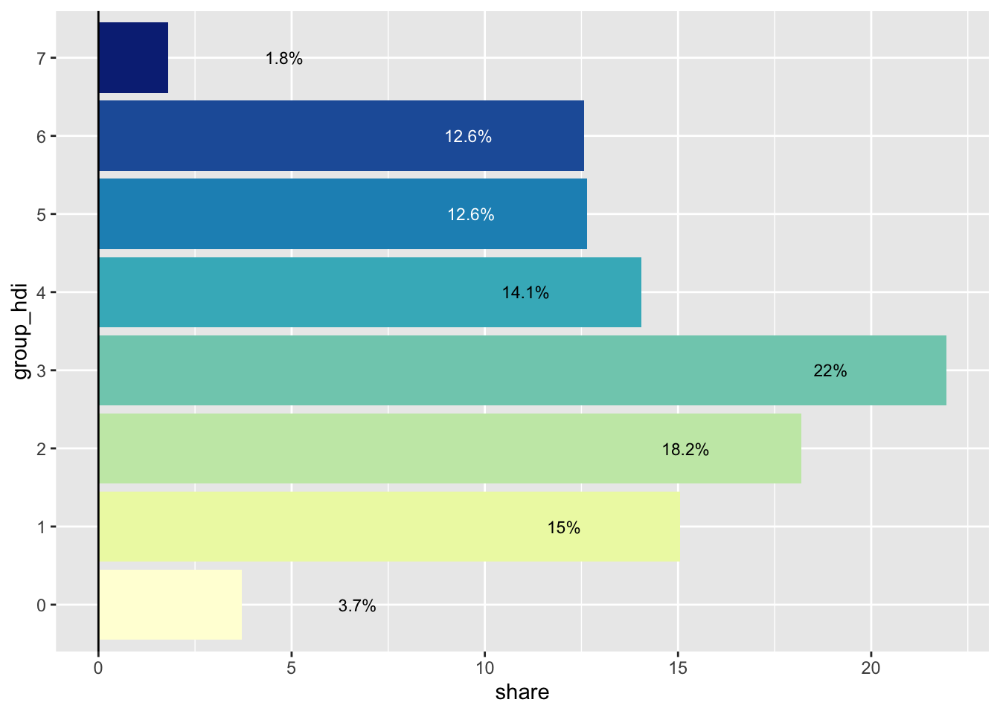
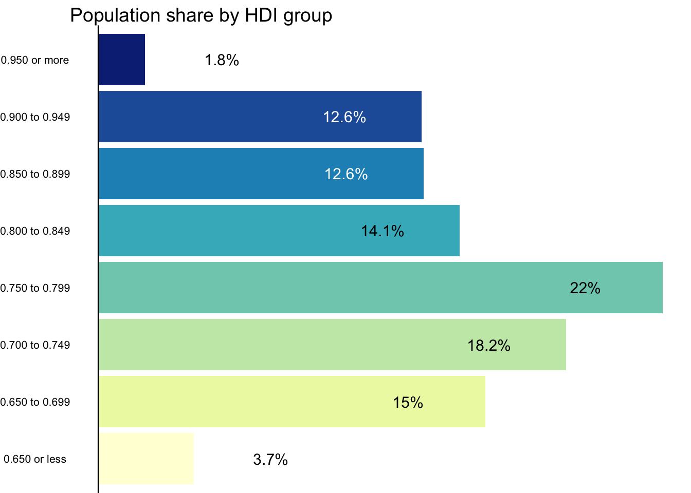

About
This page showcases the work of Vinicius Oike Reginatto. You can find the original code on his Github and the original blog post on his personal website.
Thanks to him for accepting sharing his work here! 🙏🙏
As a teaser, here is the map we’ll learn how to build. This
visualization shows the Human Development Index (HDI) at the
subregional level in Sao Paulo, Brazil’s largest city. The values
follow the standard United Nations’s HDI: values are in the 0 to 1
range. The visualization combines a choropleth map with a bar chart
using the patchwork package.
IMAGE
1. Data and Libraries
To follow this tutorial you will need the following packages.
The original plot uses the Raleway font but we’ll ignore this for the purposes of this tutorial.
The HDI estimates are from the Atlas of Human Development in Brazil and to make this tutorial easier to follow I cleaned the data and made it available on my GitHub. To import the data:
2. Basic Map
At its core, this visualization is a choropleth map that shows the
spatial distribution of the Human Development Index (HDI) in São
Paulo. The code below uses geom_sf to make the map. The
additional argument lwd makes the lines of each border
thinner and color changes the color of the line.
Each polygon represents a “Human Development Unit” and can be interpreted like a small neighborhood.

Using bins
We use bins to group the continuous variable HDI. This makes it
easier to visualize the data and to find spatial clusters. There are
many ways to do this but here we use the
scale_fill_fermenter function directly. This is a quick
and easy approach to binning a continuous variable. This function
also makes a - in my opinion - nicer looking color legend.
The color palettes from RColorBrewer work very well for
maps and we use the YlGnBu palette. We specifiy the
breaks of the intervals mannually using the
breaks argument.
ggplot(atlas) +
geom_sf(aes(fill = HDI), lwd = 0.05, color = "white") +
scale_fill_fermenter(
name = "",
breaks = seq(0.65, 0.95, 0.05),
direction = 1,
palette = "YlGnBu"
)
Final Map
The finished version of the map includes simple labels and uses
theme_map() from the ggthemes package. The
arguments inside the theme function mostly change the
size and the alignment of the text labels. For your final plot
you’ll most likely want to change the
legend.key.size and plot.title size
arguments.
pmap <- ggplot(atlas) +
geom_sf(aes(fill = HDI), lwd = 0.05, color = "white") +
scale_fill_fermenter(
name = "",
breaks = seq(0.65, 0.95, 0.05),
direction = 1,
palette = "YlGnBu"
) +
labs(
title = "HDI in Sao Paulo, BR (2010)",
subtitle = "Microregion HDI in Sao Paulo",
caption = "Source: Atlas Brasil"
) +
theme_map() +
theme(
# Legend
legend.position = "top",
legend.justification = 0.5,
legend.key.size = unit(1.25, "cm"),
legend.key.width = unit(1.75, "cm"),
legend.text = element_text(size = 12),
legend.margin = margin(),
# Increase size and horizontal alignment of the both the title and subtitle
plot.title = element_text(size = 28, hjust = 0.5),
plot.subtitle = element_text(hjust = 0.5)
)
pmap

3. The Bar Chart
To make the bar chart we need to transform the data. We want to
calculate the share of the total population that lives within each HDI
group. To make the same groups as those created by
scale_fill_fermenter we use
findInterval using the same breaks and right-closed
intervals. To find this we group by group_hdi, sum the
pop (population) of these regions, and compute the
percent share within each group.
This bar chart serves two goals. First, it shows the distribution of the population across all HDI groups. Second, it compensates for map area bias, a common pitfall of choropleths. Map area bias refers to the natural tendency to attribute greater weight/importance to larger areas. Looking at the map, we see very large areas in the southernmost part of the city that have low values of HDI. These areas however are not densely populated and account for a relatively small share of the city’s population.
# Calculate population share in each HDI group
pop_hdi <- atlas |>
st_drop_geometry() |>
mutate(
group_hdi = findInterval(HDI, seq(0.65, 0.95, 0.05), left.open = FALSE),
group_hdi = factor(group_hdi)
) |>
group_by(group_hdi) |>
summarise(score = sum(pop, na.rm = TRUE)) |>
ungroup() |>
mutate(share = score / sum(score) * 100) |>
na.omit()
ggplot(pop_hdi, aes(group_hdi, share, fill = group_hdi)) +
geom_col()
Using text labels
Instead of using axis labels we plot the value of each group directly on top of each bar. To improve readability we make the color of the text labels variable (black or white) and also nudge the label of the first and last group horizontally.
Getting the right amount of horizontal nudge requires some trial and
error and also depends on the size of your final visualization. In
your own chart, you’ll most likely change the
share + 3/share - 3 and the
size argument in geom_text.
# Create a variable to store the position of the text label
pop_hdi <- pop_hdi |>
mutate(
y_text = if_else(group_hdi %in% c(0, 7), share + 3, share - 3),
label = paste0(round(share, 1), "%")
)
ggplot(pop_hdi, aes(group_hdi, share, fill = group_hdi)) +
geom_col() +
geom_hline(yintercept = 0) +
# Text labels
geom_text(
aes(y = y_text, label = label, color = group_hdi),
size = 3
) +
coord_flip() +
# Use the same color palette as the map
scale_fill_brewer(palette = "YlGnBu") +
# Swap between black and white text
scale_color_manual(values = c(rep("black", 5), rep("white", 2), "black")) +
# Hide color legend
guides(fill = "none", color = "none")
Final Bar Chart
We use a custom label for the final version of this plot.
# Labels for the color legend
x_labels <- c(
"0.650 or less", "0.650 to 0.699", "0.700 to 0.749", "0.750 to 0.799",
"0.800 to 0.849", "0.850 to 0.899", "0.900 to 0.949", "0.950 or more"
)
pcol <- ggplot(pop_hdi, aes(group_hdi, share, fill = group_hdi)) +
geom_col() +
geom_hline(yintercept = 0) +
geom_text(
aes(y = y_text, label = label, color = group_hdi),
size = 4
) +
coord_flip() +
scale_x_discrete(labels = x_labels) +
scale_fill_brewer(palette = "YlGnBu") +
scale_color_manual(values = c(rep("black", 5), rep("white", 2), "black")) +
guides(fill = "none", color = "none") +
labs(
title = "Population share by HDI group",
x = NULL,
y = NULL
) +
theme_void() +
theme(
panel.grid = element_blank(),
plot.title = element_text(size = 14),
axis.text.y = element_text(size = 8),
axis.text.x = element_blank()
)
pcol
4. The final plot
To join both plots we use the inset_element function from
the patchwork package. Use the arguments inside this
function to customize the display size of the bar chart.
In this final visualization we can see that nearly 40% of the city’s population lives in regions with an HDI range of 0.700-0.799. These areas are primarily located in the peripheral parts of the city, including the southern, eastern, and northern sections. In contrast, the central part of the city, which has the highest HDI areas, accounts for less than 15% of the total population.
p_hdi_atlas <-
pmap + inset_element(pcol, left = 0.50, bottom = 0.05, right = 1, top = 0.5)
p_hdi_atlas

As stated previously, the combination of a bar chart (or histogram) with a choropleth makes for a powerful and insightful combination. Happy mapping!
Author:
Vinicius Oike Reginatto
Data:
Atlas of Human Development in Brazil